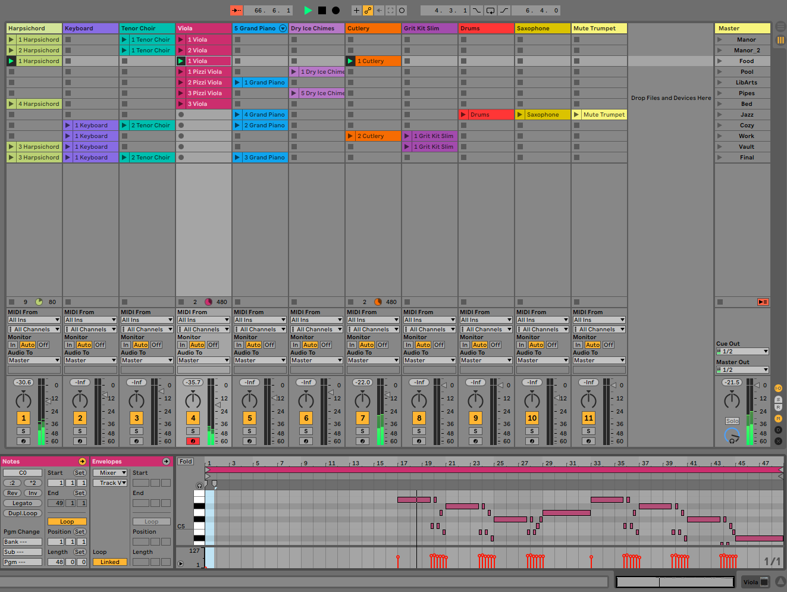

A Virtual Reality game set in an abandoned mansion, where the player must solve the puzzles of the mansion to find a hidden treasure. This game was designed and programmed by a team of RIT students, and it was quality enough to be showcased in RIT's annual Imagine RIT event.
However, my role in its production was actually as the game's composer. I made a total of 11 tracks for the game, which are variants of a spooky theme tailored to fit different areas of the mansion. I used Ableton 9 to create the tracks, which allowed me to test the seamless transitions they have between each other as the player traverses the mansion.
The game can be downloaded with the following links: